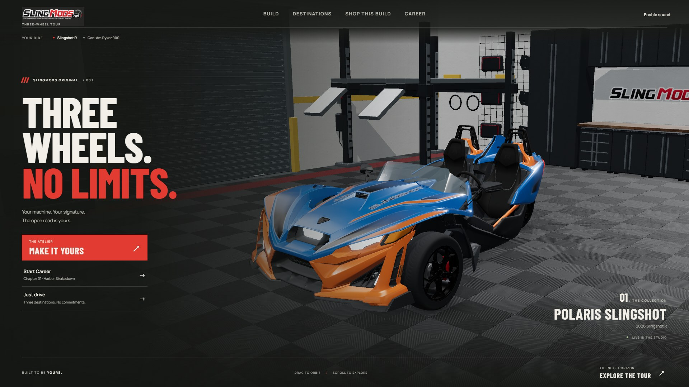

SLINGMODS / DESIGN CANDIDATE
TOUR / 001
Play this branch ↗
Opening
Build
Destinations
Shop
Garage
Career
Race HUD
Results
Ryker
Phone
Phone build

The opening / a live vehicle editorial
Actual packaged game captures · Separate UI branch · Main untouched